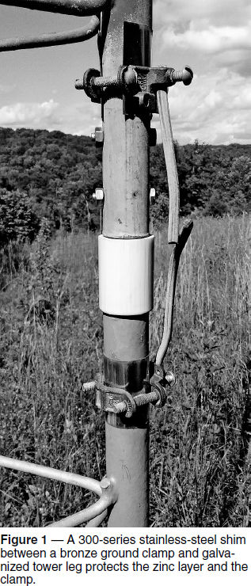
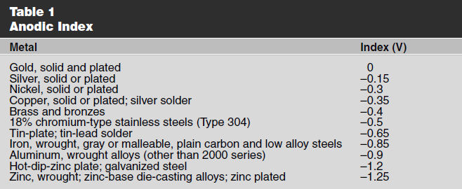
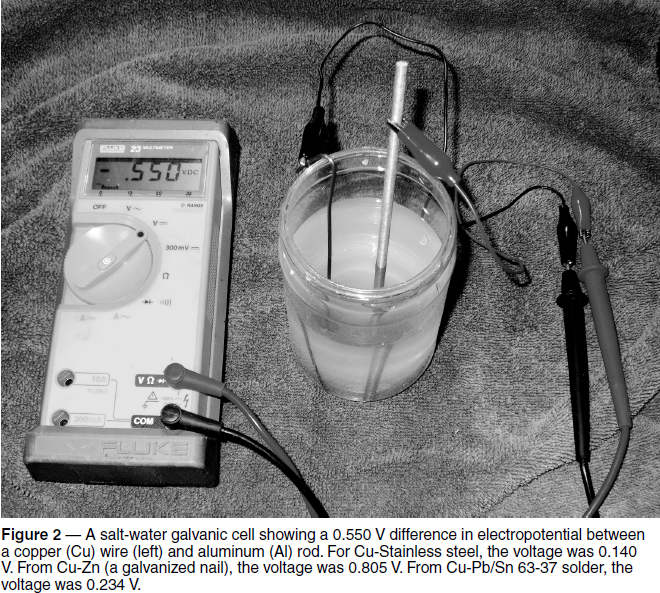

Experiment #175 — Dissimilar Metals
When putting up my station with tower maven Don Daso, K4ZA, I got an earful of good advice about what happens when different types of metal are clamped together out in the weather. Hint — nothing good! Don gave me some good tips on how to manage the situation at reasonable cost.1 Because metal-to-metal connections are so common in amateur antenna and ground systems, I thought it was a great candidate for a “Hands-On Radio” column.
Electrochemistry at Work
Atoms that have an affinity for electrons are called oxidizing agents. Similarly, atoms that donate electrons are called reducing agents. There is a whole range of strengths for oxidizing and reducing agents. The greater the difference between the material’s relative affinity for electrons, the stronger the reaction between them can be, with atoms of one material acquiring electrons from the donating material in an oxidation-reduction reaction. The relative difference in strength is called electropotential.
If two materials with different electropotentials are in contact with each other, or there is a conducting path between them, electrons will move from the reducing to the oxidizing agent. This results in a change in the chemical makeup of the two materials. When the reaction occurs between parts of our antenna system, we apply a more descriptive word — corrosion. Corrosion is generally bad because the result of the reaction is generally a compound with less strength and conductivity than the original metal. Rust is one such corrosion product and so is that crusty stuff that builds up on your car battery terminal. Corrosion can proceed until the connection no longer conducts current or fails mechanically, i.e. the wire, antenna, or tower falls down.
Because not everything is made from the same metal, contacts between dissimilar metals are very common. If the metals are kept dry, corrosion proceeds slowly. But outside, the water from rain and condensation collects in the junction. This creates the conducting path, enabling electrons to flow and cause corrosion.
The Galvanic Series and Anodic Index
It is useful to know which materials can “get along” and which cannot. Chemists developed a list called the galvanic series, ranking materials from the strongest electron donors to the most inert material. The farther apart the two materials are in the series, the stronger the reaction between them will be. The more active material will act as the cathode, which donates the electrons. (Remember that chemistry is based on electronic current — the flow of electrons — and not conventional current, which is the flow of positive charge that is used in radio electronics. Confusing? Yes.)
Electropotential can be measured with a voltmeter. Measured in volts, it is what Alessandro Volta discovered and made use of to create the voltaic pile, known today as a battery. Because electropotential is a relative difference, it is measured as a voltage with respect to some reference material. That voltage is a metal’s anodic index with respect to gold as the reference material. Table 1 shows the anodic series for materials common in our stations.
Because no two metals have the same anodic index value, won’t there always be some corrosion when there is contact between dissimilar metals? Yes, but very small differences in anodic index result in very slow corrosion. If the environment is harsh, such as exposed to the weather or salt spray, limiting the difference in anodic index to 0.15 V or less means the corrosion will be manageable. In normal conditions, up to 0.25 V difference can be tolerated. (This is discussed in more detail at corrosion-doctors.org/ Definitions/galvanic-series.htm.)
Connecting to Galvanized Surfaces
Because zinc is an extremely active material (which is why it is so effective at protecting steel and iron), connecting copper wire or bronze clamps directly to a galvanized surface creates a very strong corrosion potential. What should you do?
Although there are anti-corrosion compounds, continuous exposure to weather will eventually wash them away. Instead, an inexpensive method of protecting the connection is to place a thin piece of 300-series stainless steel between the galvanized surface and the clamp or wire. 24-gauge (0.025-inch) shim stock is sufficient and acts to slow down the corrosion process while maintaining good electrical connectivity for lightning protection and RF connections.2 Figure 1 shows a photo of a ground clamp on a galvanized tower leg with a shim between the clamp and the leg. Thin shim can be cut with heavy scissors and bent by hand. Another option is to use a tower leg clamp designed specifically for this application, such as the Rohn R-CPC1/1.25 (available from several vendors).

Some areas have corrosive soils and other environmental characteristics that make corrosion an ongoing issue with towers. Tony Fisher’s, K1KP, article in the October 2010 issue of QST — “Is Your Tower Still Safe?” — discusses setting up a sacrificial anode system that will protect your tower from corrosion. You can also check with local contractors to see if corrosion is a special problem in your area.
Making Your Own Galvanic Cell
This is all very academic until you see it for yourself. The easy and non-destructive way is to make your own galvanic cell and take some measurements.
Here’s what you need: a plastic or glass jar (12 – 16 oz. capacity), a tablespoon of kitchen salt, a multimeter, two clip leads, and some test metals. I used common materials: copper, aluminum, stainless steel, galvanized steel, and 63/37 lead-tin solder. Any metal you can carry in the palm of your hand is safe to test, including coins and household metals. Remove any oxidation or grease from the surface, so that it’s shiny and clean.
Dissolve the salt in enough water to fill about 3⁄4 of the jar. Set the multimeter to measure voltage (the 2 V scale will work best) and attach clip leads to the probes. (This keeps your probes from getting salt water on them.) Set the jar on an absorbent towel (not a good one!) and put the copper wire in the water with one end held out of the water by the clip lead or jar lip. (Keep the clip lead out of the water to keep its surface clean, too.) Now attach the other clip lead to one of the remaining pieces of metal placed in the water, but not touching the copper wire. You can see the experimental setup in Figure 2. The voltage shown on the meter will be approximately the difference in anodic potential between the two metals in Table 1. (The exact voltage will probably vary from Table 1 values because the metal may be an alloy or there may be surface oxidation that alters the chemistry a bit.)


Notes
1D. Daso, K4ZA, Antenna Towers for Radio Amateurs, Appendix B, ARRL, 2010.
2https://www.galvanizeit.org/images/uploads/drGalv/Stainless_Steel_in_Contact_with_Galvanized_Steel.pdf